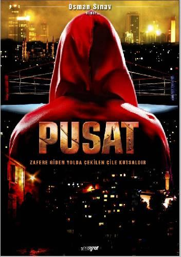
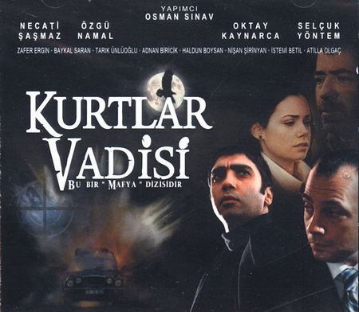
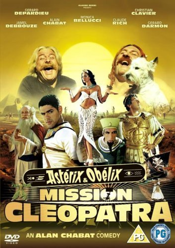

My favourite movies
Taksi 1
- Director: Gérard Pirès
- Relase data : 26 October 1998 (Russia)
- Genre: Action, Comedy, Crime
- Storyline:To work off his tarnished driving record, a hip taxi driver must chauffeur a loser police inspector on the trail of German bank robbers.
Pusat

- Director:Abdülkadir Ceylan Ede
- Country: Turkey
- Language: Turkish
- Release Date: TV Series 14 September 2007 (Turkey)
- Genre:Action, Drama, Romance
Kurtlar vadisi

- Director:Necati Sasmas
- Realse data: TV Series (2003)
- Genre: Action, Crime, Drama
- Storyline:The Wolves of The Valley serie is written by Osman Sinav which explains Turkish mafia related with external international powers. The series lasted 97 episodes. The header character is Polat Alemdar and his mafia crew. Polat is an agent who tries to destroy whole Turkish Mafia assigned by KGB (agency). Also , as long as polat digs the deepside of mafia he learns bitter truths about his past and his family. Today The Wolves of The Valley still goes on with many character substitutions and with different name.
Astérix and Obélix: Mission Cléopâtre

- Director: Alain Chabat
- Realse data: 7 August 2002
- Genre: Adventure, Comedy, Family
- Storyline:Astérix and Obélix go to Egypt to help architect Numérobis who is building a palace for Cleopatra.
Home